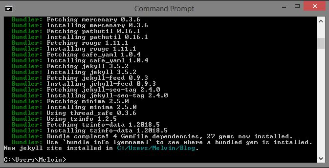
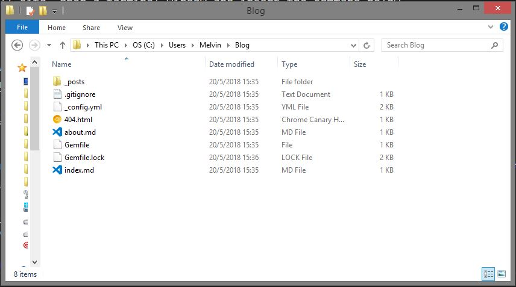
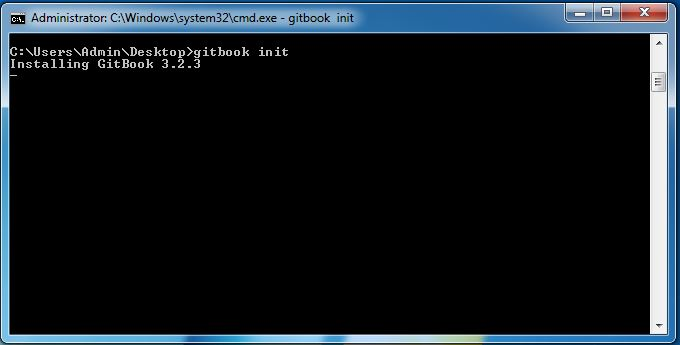

Last modified: Thu Aug 16 2018 22:48:59 GMT+0800 (Malay Peninsula Standard Time)
Default Template Generator
Introduction
A template generator is a tool that allow you to get started with a project by using the starter code (more like a sample code provided to get you started). Both Jekyll and GitBook have the ability to generate a template.
In this section, we will use the template generator to generate the starter code. The purpose of doing this is to check out the files structure and get a concept of what it can do. You should go through this section as it will give you a sense of how things should be done and what is given to you. There are important sections that explains what should and should not be done for both Jekyll and GitBook.
Jekyll
Create an Initial Website
To create a new Jekyll site, open a terminal window and insert the command below. Blog will the the website that it will be called and the folder that it will create to store all the files.
jekyll new Blog
Note: You may obtain some additional information from Jekyll Quick-start Guide.
Figure: Command inserted to terminal window
Figure below shows an a website is created with the template generator. The folder can be found at C:/Users/Melvin/Blog according to the information shown on the terminal window.

Figure: Template generator generated a website
Figure below shows the files in the Blog folder.

Figure: Files in the folder
Start Jekyll Server
To view the website created using the template generator, start the server at the root directory of your folder using the command jekyll serve. For my case, the root directory of my application is Blog. You may want to refer to the terminal window section if you have forgotten how to start a terminal window pointing to the directory.
Figure below shows the command mentioned is entered in the terminal window and a local (on your machine) web server is started.
Figure: A Jekyll server is started
From the figure above, the server address to access our website is localhost:4000. Head to your preferred web browser and enter the address localhost:4000 at the address bar. Figure below shows the landing page of the website generated by template generator.
Figure: Landing page of the website
View and Edit Jekyll Files
The easiest way of editing the content is through a text editor. The operation may be different if you use a text editor other than Visual Studio Code. Open your folder in Visual Studio Code by navigating to File > Open Folder. Go to the root directory of your folder, C:/Users/Melvin/Blog for my case, and select "Open Folder". Figure below shows the content of the folder Blog before "Open Folder" action is performed.
Figure: Blog folder is selected.
After the folder is opened, a list of files available in Blog folder are shown in the bottom left panel. Figure below shows the result after the folder is opened.
Figure: index.md is opened at VS Code
There is nothing much that we can edit as this is the template. The homepage is not editable as they are created by Jekyll internally. The only content that we can edit as a proof of concept is the file under _post subdirectory. For any files that is edited, you will have to restart your web server. This is due all the changes has to be regenerated before users can view it on the browser.
Jekyll Directory Structure
The information in this section is selectively obtained from Official Jekyll Documentation. You may take a look if you are interested. Depending on the programmer and the purpose of the Jekyll website, the file structures may be slightly different.
A basic Jekyll site usually looks something like this:
.
├── _config.yml
├── _data
| └── members.yml
├── _drafts
| ├── begin-with-the-crazy-ideas.md
| └── on-simplicity-in-technology.md
├── _includes
| ├── footer.html
| └── header.html
├── _layouts
| ├── default.html
| └── post.html
├── _posts
| ├── 2007-10-29-why-every-programmer-should-play-nethack.md
| └── 2009-04-26-barcamp-boston-4-roundup.md
├── _sass
| ├── _base.scss
| └── _layout.scss
├── _site
├── .jekyll-metadata
└── index.html # can also be an 'index.md' with valid YAML Frontmatter
It contains a list of folders and files. Each of them serves a different purpose. Here is an overview of what each of these does:
| File/Directory | Description |
|---|---|
_config.yml |
Stores configuration data. Many of these options can be specified from the command line executable but it’s easier to specify them here so you don’t have to remember them. |
_drafts |
Drafts are unpublished posts. The format of these files is without a date: title.MARKUP. Learn how to work with drafts. |
_includes |
These are the partials that can be mixed and matched by your layouts and posts to facilitate reuse. The liquid tag {% include file.ext %} can be used to include the partial in _includes/file.ext. |
_layouts |
These are the templates that wrap posts. Layouts are chosen on a post-by-post basis in the YAML Front Matter, which is described in the next section. The liquid tag {{ content }} is used to inject content into the web page. |
_posts |
Your dynamic content, so to speak. The naming convention of these files is important, and must follow the format: YEAR-MONTH-DAY-title.MARKUP. The permalinks can be customized for each post, but the date and markup language are determined solely by the file name. |
_data |
Well-formatted site data should be placed here. The Jekyll engine will autoload all data files (using either the .yml, .yaml, .json or .csv formats and extensions) in this directory, and they will be accessible via site.data. If there's a file members.yml under the directory, then you can access contents of the file through site.data.members. |
_sass |
These are sass partials that can be imported into your main.scss which will then be processed into a single stylesheet main.css that defines the styles to be used by your site. |
_site |
This is where the generated site will be placed (by default) once Jekyll is done transforming it. It’s probably a good idea to add this to your .gitignore file. |
.jekyll-metadata |
This helps Jekyll keep track of which files have not been modified since the site was last built, and which files will need to be regenerated on the next build. This file will not be included in the generated site. It’s probably a good idea to add this to your .gitignore file. |
index.html or index.md and other HTML, Markdown files |
Provided that the file has a YAML Front Matter section, it will be transformed by Jekyll. The same will happen for any .html, .markdown, .md, or .textile file in your site’s root directory or directories not listed above. |
| Other Files/Folders | Every other directory and file except for those listed above—such as css and images folders, favicon.ico files, and so forth—will be copied verbatim to the generated site. There are plenty of sites already using Jekyll if you’re curious to see how they’re laid out. |
Important Jekyll Notes
Do not remove the content between the two ---. It is part of the Jekyll Front Matter. The purpose if it is to tell Jekyll that it is a special file. Figure below shows the content between two --- are YAML font matter.
Figure: index.md contains --- special files content
From my experience, people who are new to Jekyll will simply remove the lines as they do not know there are part of the special files.
GitBook
Create An Initial GitBook
To create a new GitBook, open a terminal window and insert the command below. If you are doing it for the first time after GitBook CLI installation, it may take a while to complete. Gitbook is the name of our book and the folder that it will create. Figure below shows the command below is inserted into terminal window.
gitbook init ./Gitbook
Command inserted to terminal window
Note: You may obtain some additional information from Gitbook Setup Guide.
Figure below shows the initialization process is completed along with a list of files created.
Figure: Gitbook initialized completed
Figure below shows Gitbook is initialized for the very first time and it is installing Gitbook v3.2.3. It will take some time to install all the required packages if you are doing it for the very first time.

Figure: Initial Gitbook creation.
The folder can be found at C:/Users/Melvin/Gitbook according to the information shown on the terminal window.
Figure below shows the files in the Gitbook folder.
Figure: Files in the folder
Start GitBook Server
To view the GitBook created using the template generator, start the server at the root directory of your folder using the command gitbook serve. For my case, the root directory of my application is Gitbook. You may want to refer to the terminal window section if you have forgotten how to start a terminal window pointing to the directory.
Figure below shows the command mentioned is entered in the terminal window and a local (on your machine) web server is started.
Figure: A Gitbook server is started
From the figure above, the server address to access our Gitbook website is localhost:4000. Head to your preferred web browser and enter the address localhost:4000 at the address bar. Figure below shows the landing page of the Gitbook generated by template generator.
Figure: Landing page of the website
View and Edit GitBook Files
The easiest way of editing the content is through a text editor (still). The operation may be different if you use a text editor other than Visual Studio Code. Open your folder in Visual Studio Code by navigating to File > Open Folder. Go to the root directory of your folder, C:/Users/Melvin/Gitbook for my case, and select "Open Folder". Figure below shows the content of the folder Gitbook before "Open Folder" action is performed.

Figure: Gitbook folder is selected
After the folder is opened, a list of files available in Gitbook folder are shown in the bottom left panel. Figure below shows the result after the folder is opened.
Figure: readme.md is opened at VS Code
The content of Gitbook is written in Markdown. It is very simple to write in markdown. You may use Markdown Cheat Sheet for your reference. For demo purpose, insert the code below to readme.md.
# Introduction
First paragraph
## Subheader
Second paragraph
### Another subheader
More information
Figure below shows the result of the Gitbook after the following text are inserted to readme.md. For any files that is edited, you will have to restart your web server. This is due all the changes has to be regenerated before users can view it on the browser.
Figure: Content of readme.md is replaced by the given code
GitBook Files Structure
The information in this section is selectively obtained from Official Gitbook Documentation. You may take a look if you are interested. Depending on the programmer and the purpose of the Gitbook, the file structures may be slightly different.
A basic Gitbook usually looks something like this:
.
├── book.json
├── README.md
├── SUMMARY.md
├── chapter-1/
| ├── README.md
| └── something.md
└── chapter-2/
├── README.md
└── something.md
It contains a list of folders and files. Each of them serves a different purpose. Here is an overview of what each of these does:
| File | Description |
|---|---|
book.json |
Stores configuration data (optional) |
README.md |
Preface / Introduction for your book (required) |
SUMMARY.md |
Table of Contents (See Pages) (optional) |
GLOSSARY.md |
List of terms to annotate (See Glossary) (optional) |
Important GitBook Notes
Gitbook is generated every time you start the Gitbook server and stored in the folder /YOUR_GITBOOK_FOLDER/_book. If you would like to have the book generated without starting the server, you can use the command gitbook build. The _book folder contains all the generated code and can be moved to any web server.
If you would like to export your Gitbook to ePub, Mobi, or PDF files after publishing it on the web, refer to this documentation.